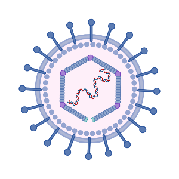

Evolutionary and molecular geneticist, studying viral evolution and genetic conflict.
Hello,
I'm Thomas
Replication fidelity of large dsDNA viruses, such as herpesviruses, is highly dependend on viral DNA-polymerases with 3'-5' exonuclease activity. The figure depicts the herpesvirus DNA replication cycle as well as the protein structure of the viral DNA-polymerase.
We use proofreading impaired mutants to increase mutation frequencies and study the evolution of those viruses.
created with
Website Builder Software .